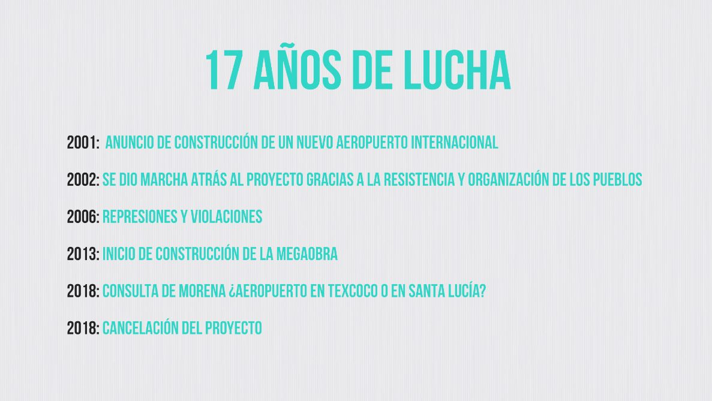

Presentación
El conflicto surge en 2001 con el anuncio de construcción de un nuevo aeropuerto internacional para la CDMX sobre la laguna de Texcoco en la zona oriente de la Ciudad de México. Este territorio es de gran importancia histórica, económica y cultural para las comunidades próximas. La gestión presidencial de Enrique Peña Nieto lo anuncia como el más grande del país y uno de los más grandes del mundo. El proyecto venía acompañado por la construcción de una megalópolis y suponía la destrucción no sólo de la laguna de Texcoco sino de más de una docena de cerros cercanos para la extracción de sólidos.
La comunidad de Atenco inicia entonces un proceso de resistencia que duraría 17 años y protagonizaría algunos de los episodios de represión más atroces del país y que movilizaron el apoyo de otros sectores y comunidades de México (como el caso de los estudiantes con el movimiento #YoSoy132).
Con la llegada a la presidencia de Andres Lopez Obrador se anuncia una consulta popular para decidir sobre la construcción o no del nuevo aeropuerto. A partir de allí se organiza la Plataforma de pueblos unidos en contra del aeropuerto, donde comienzan a integrarse diversos grupos y personas y desde donde se plantea la realización de la campaña. La campaña es un éxito y en 2018 se anuncia la cancelación del proyecto.

A continuación compartimos un documental que resume gran parte del proceso de la campaña.
 Andrea Ixchíu Hernández es una activista maya k'iche', defensora de la tierra y periodista. Vive en Totonicapán, Guatemala. Construye métodos, herramientas y técnicas de código abierto para rastrear, investigar e intervenir en las narrativas culturales para defender la vida y el territorio mientras se desmantelan los sistemas de opresión.
Andrea Ixchíu Hernández es una activista maya k'iche', defensora de la tierra y periodista. Vive en Totonicapán, Guatemala. Construye métodos, herramientas y técnicas de código abierto para rastrear, investigar e intervenir en las narrativas culturales para defender la vida y el territorio mientras se desmantelan los sistemas de opresión.